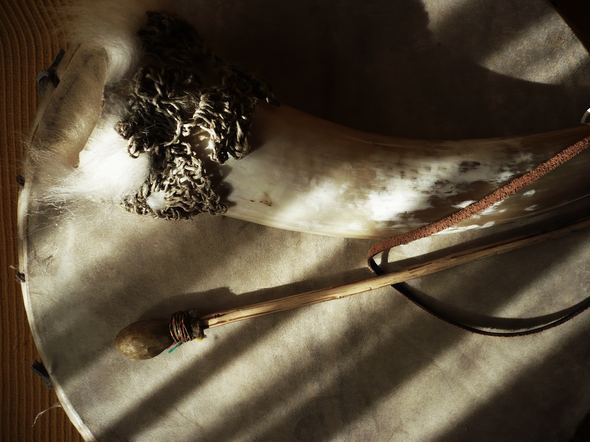

Blog A Musician's Log | The most recent note

Musical caves
It is said in an article written by one of the pioneers of prehistoric art studies: the Romanian Lya Dams, who ended up specializing in the rock art of the Spanish Levant.
The text in question, entitled "Palaeolithic lithophones: descriptions and comparisons" (published in the Oxford Journal of Archaeology, 4 (1), March 1985, pp. 31-46), points out that early humans may have come to use the stalactites, stalagmites and other limestone formations of the caves they inhabited as lithophones.
Blog A Musician's Log | The most recent sketch

Kamacheña: A one-handed Andean flute
The kamacheña or camacheña (also called quena jujeña, flautilla or quenilla de Pascua) is a reed flute about 30-35 cm long, with the distal end closed and the proximal open. In the latter, a particular mouthpiece is carved, similar to that of an Andean quena (a simple notch) but equipped with two lateral wings or flaps. On the proximal it has three frontal fingering holes and a tuning one. It is performed in the department of Tarija (southern Bolivia) and in parts of the provinces of Jujuy and Salta (northwestern Argentina).
Articles
El erquencho y otros clarinetes idioglóticos
Cuadernos de investigación musical, 17, enero-junio 2023, pp. 150-171.
[From the Spanish abstract] In his 1935 work on musical instruments among the indigenous peoples of South America, Karl Gustav Izikowitz noted the existence of a group of clarinets without fingering holes and idioglottal which he called "the Southern type." Curiously, he did not include in his list one of the few (if not the only) current survivors of that organological family: the erque or erquencho, an aerophone built and played in northwestern Argentina and southern Bolivia. Of relatively simple structure, it produces a sound hoarse, squeaky and gangly, in a limited range of notes, which does not prevent it from being very popular in its area of origin. Unfortunately, outside it is, even today, quite unknown. The article offers a review of the main characteristics of an almost lost family, and of a sound artifact almost invisible and scarcely performed outside its more traditional contexts.
All articles [in Spanish]
Books and other publications
Yanawan yuraqwan
Andean musical instruments in black and white
Bogotá: Wayrachaki Editora, 2021.
Photo album with 15 black and white images accompanied by brief descriptions, introducing some of the most interesting traditional Andean musical instruments: quenas, pusi p'ias, sikus, toyos, rondadores, ocarinas, charangos, pingullos, pinkillos, waka pinkillos, waylla qhepas and wank'aras.